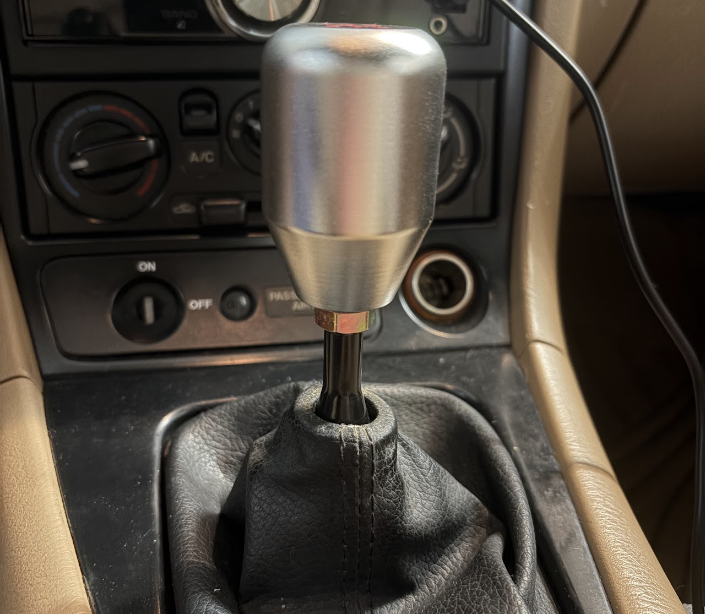
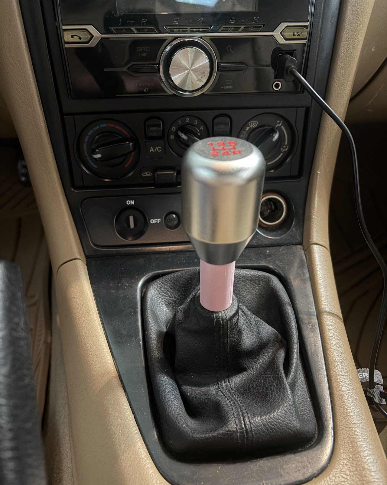
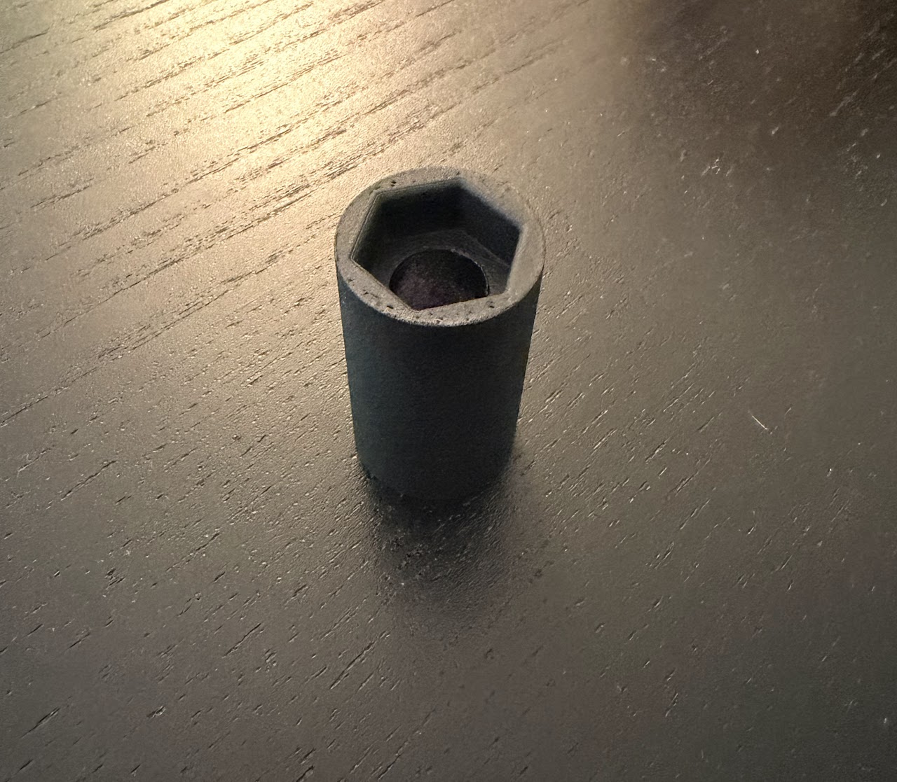
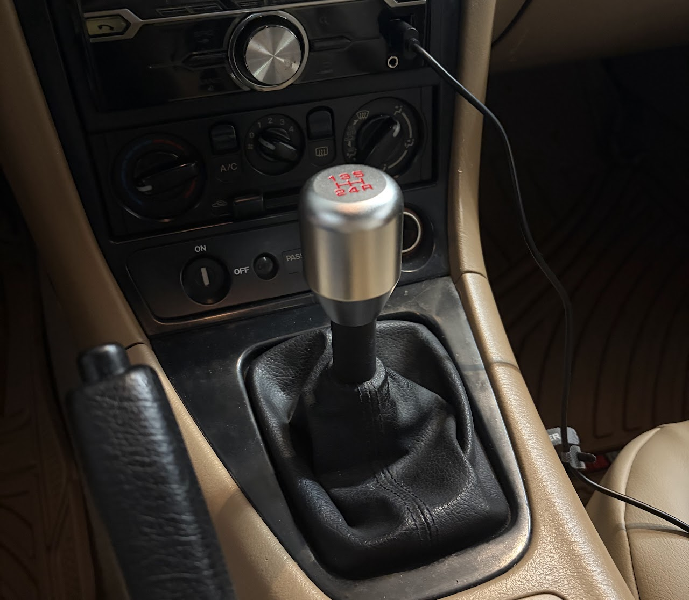

This was a personal project to make a cheap aftermarket shift knob for a 2001 Mazda Miata look a bit better. Both the final version and the prototype were designed in Solidworks and printed on a BambuLab A1 Mini.

The shift knob was just a generic one, so it was not designed with this car in mind and as a result it sits quite high up and leaves the gear stick and zinc-coated lock nut exposed which is unsightly.

The first prototype covers these parts for a more original/clean look (aside from the color).
For the final version I shortened the height of the spacer by 1mm and added a fillet along the top edge where the lock nut is inserted for a better fit. The first prototype did not allow the lock nut to fully sit into the spacer. Final version and the fully installed part below.

